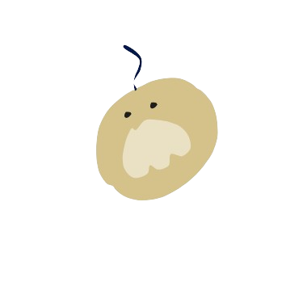

地図
一覧
診断
レシピ
参考

おとりよせサイト
楽天市場
楽天マート
YAHOO!ショッピング
おとりよせネット
おとなの週末
武双庵
納豆一覧掲載企業
道南平塚食品株式会社
太子食品工業株式会社
有限会社 高畠納豆
有限会社 川口納豆
タカノフーズ株式会社
株式会社 笹沼五郎商店
有限会社 下仁田納豆
Shonan Soy Studio Inc.
株式会社大力納豆
富士納豆製造所
株式会社せんだい
株式会社 Mizkan
株式会社金城納豆食品
奥野食品株式会社
小金屋食品株式会社
藤原食品
有限会社相沢食産
蒜山食品加工株式会社
有限会社ハス商会
マルキン食品株式会社
株式会社丸美屋
有限会社野田食品
二豊フーズ株式会社
沖フーズ株式会社
引用・参考
全国納豆協同組合連合会
納豆Wiki
e-natto.com
デイリーポータルZ
納豆日誌
TrustCellar
DiscoverJapan
まいまい京都
物産おおいた